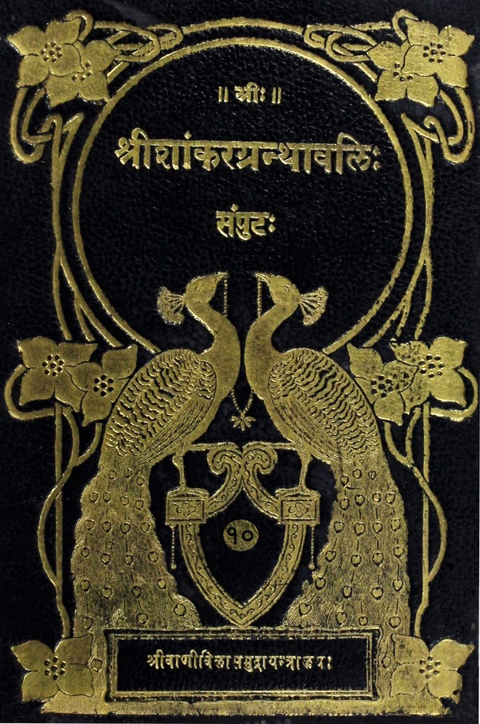

श्रीशांकरग्रन्थावलिः
संपुटः १ - २०
Home
About
Concluding Note
T. K. Balasubramaniam
Superhuman efforts of a savant
Prema Nandakumar
Views on the Sri Vani Vilas Press
His (Sri TKB’s) aim
Volumes
नृसिंहपूर्वतापनीयोपनिशद्भाष्यम्
शान्तिमन्त्रस्य विध्नोपशमार्थस्य विवरणम्
प्रथमोपनिषत्
श्रीनृसिंहब्रह्मविद्याया आख्यायिकापूर्वमवतारणम्
सामसंबन्धित्वेन पृथिव्यन्तरिक्षद्युब्रह्मलोकानामुपासनं श्रीनृसिंहोपासनान्तर्गतम्
साङ्गसामोपासनोपन्यासः
अग्निसूर्यचन्द्रब्रह्मरूपाणां सामाङ्गदेवतानामुपासननिरूपणम्
प्रथमसामोद्घारः
क्षीरोदार्णवशायिनो नृकेसरिणो योगारूढस्य उपासनोपपादनम्
द्वितीयसामोद्घारः
उपास्यस्य नृकेसरिणस्त्रिनेत्रत्वाद्याकारविशेषोपन्यासः
तृतीयसामोद्घारः
अस्य साम्नो विश्वस्रष्टृत्वोपन्यासः
चतुर्थसामोद्घारः
व्यवधानेन सामोद्घारस्य शङ्कापूर्वकं प्रयोजनकथनम्
नैरन्तर्येण सामोद्घारस्पष्टीकरणम्
द्वितीयोपनिषत्
आख्यायिकाद्वारा अधिकारिविशेषणान्तरम्
प्रणवचतुर्मात्राव्यूहोपासनम्
पादाक्षरसंख्यापूर्वककृत्स्नमूलमन्त्राक्षरसंख्यानिरूपणं हृदयादिपञ्चाङ्गोपन्यासश्च
प्रत्येकं मूलमन्त्राक्षरणां प्रणवसंपुटितत्वविधानात् पदाज्ञाने प्राप्ते, तत्सौलभ्यार्थं पदोद्घारः
उपास्यगुणविशेषनिर्णयार्थं मूलमन्त्रपदानां प्रत्येकं प्रश्नप्रतिवचनाभ्यामर्थविवरणम्
अहंपदार्थविवरणवाक्यस्य अहमस्मीत्यादेरुपासनाफलपरत्वप्रदर्शनम्
तृतीयोपनिषत्
उपासनानन्तरं शक्तिबीजद्वयपाठस्य संपुटीकरणसिद्धिरूपप्रयोजनकथनपूर्वकं शक्तिबीजद्वयनिर्णयः
चतुर्थोपनिषत्
शक्तिबीजनिर्णयानन्तरं मूलमन्त्राङ्गमन्त्रपाठस्य प्रयोजनकथनपूर्वकं मूलमन्त्राङ्गमन्त्राणामुद्देशक्रमः
प्रणवात्मकाङ्गमन्त्रव्याख्यानम्
सावित्रीमहालक्ष्मीनृसिंहगायत्रीरूपाणामङ्गमन्त्राणां व्याख्यानम्
प्रणवसंपुटिते एकैकस्मिन्मूलभन्त्राक्षरे तत्तद्देवतानृसिंहव्यूहे प्रदर्शयितुं प्रत्येकं प्रणवसंपुटितमूलमन्त्राक्षाराणां द्वात्रिंशन्नृसिंहव्यूहस्तुतिमन्त्राणां च पुरुश्चरणार्थानां प्रदर्शनम्
पञ्चमोपनिषत्
पञ्चमाङ्गरूपास्त्राख्यमहाचक्रविद्यामभिधातुं महाचक्रस्वरूपोद्घारः
उद्घृतमहाचक्रे यथाविहितमन्त्राक्षराणां न्यासक्रमः
महाचक्रविद्यायाः फलनिर्देशः
उक्ताया नृसिंहब्रह्मविद्यायाः फलविशेषप्रतिपादनम्
पापक्षयार्थं नित्यमेतद्विद्यानुष्ठानेन तद्ग्रन्थाध्ययनेन जपेन वा आनुषङ्गिकान्येव फलानि इति प्रतिपादनम्
एतद्विद्यानुष्ठातुरध्येतुर्जप्तुश्च उत्कर्षतरतमभावेन सर्वोत्कृष्टत्वस्य सर्वोत्कृष्टफलस्य च निरूपणम्
ललितात्रिशतीभाष्यम्
हयग्रीवं प्रति अगस्त्यप्रश्नः
श्रीदेवीप्रेरणया हयग्रीवस्य त्रिशतीस्तवोपदेशः
प्रतिनामनिर्वचनम्
स्तोत्रोपसंहारः
श्रीविद्याचक्रनिरूपणम्
श्रीविद्यामाहात्म्यम्
त्रिशतीपठनादिफलम्

नृसिंहपूर्वतापनीयोपनिशद्भाष्यम् & ललितात्रिशतीभाष्यम्
(Nirsimhapurvatapani Bhashya and Lalitatrisati Bhashya)